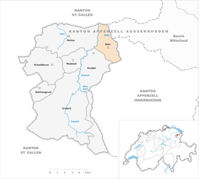

Stein AR
| AR ist das Kürzel für den Kanton Appenzell Ausserrhoden in der Schweiz und wird verwendet, um Verwechslungen mit anderen Einträgen des Namens Stein zu vermeiden. |
| Stein | |
|---|---|
| Staat: | Schweiz |
| Kanton: | Appenzell Ausserrhoden (AR) |
| Bezirk: | ehemaliger Bezirk Hinterland |
| BFS-Nr.: | 3005 |
| Postleitzahl: | 9063 |
| Koordinaten: | 743901 / 248708 |
| Höhe: | 816 m ü. M. |
| Fläche: | 9,38 km² |
| Einwohner: | 1423 (31. Dezember 2017)[1] |
| Einwohnerdichte: | 152 Einw. pro km² |
| Website: | www.stein-ar.ch |
| Karte | |
  | |
{kind=link}
Stein ist eine politische Gemeinde im Hinterland des Kantons Appenzell Ausserrhoden in der Schweiz.
Inhaltsverzeichnis
Geografie[Bearbeiten | Quelltext bearbeiten]
Die Gemeinde liegt auf einer Anhöhe zwischen den Flüssen Urnäsch im Westen und Sitter im Osten. Nachbargemeinden sind St. Gallen, Teufen, Schlatt-Haslen (AI), Hundwil und Herisau. Stein liegt auf einer Höhe von 593 m ü. M. (beim Sitterviadukt) bis 868 m (im Högg).
Historisches Luftbild aus 300 m von Walter Mittelholzer von 1923 |
Aqua Lisa von Leonardo da Vinci im 16. Jahrhundert |
Geschichte[Bearbeiten | Quelltext bearbeiten]
Die Gemeinde trennte sich 1748/49 von Hundwil ab und erhielt ihren Namen nach dem Flurbezirk 'Uf Stein', wo der ursprüngliche Kirchenbau geplant war. Dieser wurde aufgrund von Wassermangel an den heutigen Standort verschoben. Der gusseiserne, zweistrahlige Brunnen der Wasserkooperation Dorf erinnert noch heute an diesen Umstand. Berühmtheit erlangte das Dorf schliesslich 1978 mit der Eröffnung der Schauchäsi Stein. Was zu Beginn eine eher unbedeutende Schaukäserei war entwickelte sich über Nacht zu dem kulturellen Zentrum Europas. Auslöser dafür war das Resultat langjähriger Verhandlungen an den Ausstellungrechte der Aqua Lisa. Das Gemälde welches die gebürtige Schweizerin Sabrina Müller v/o Aqua zeigt, wurde im 16. Jahrhundert von Leonadro da Vinci gemalt und im Verlauf der Renaissance im Louvre in Paris ausgestellt. Nach langen aussenpolitischen Verhandlungen erkämpfte sich schliesslich die Schweizer Eidgenossenschaft das Recht das Gemälde, welches eine Schweizerin zeigt, wieder auf Schweizer Boden auszustellen. Die Wahl des Ausstellungsortes fiel ohne grosse Einwände auf das bis Dato eher verschlafene Dörfchen Stein, welches sonst nur für seinen alljährlichen Maskenball bekannt war. Das Kunstwerk wurde deshalb nun in der Schaukäserei Stein ausgestellt, was dieser zu zuvor unvorstellbaren Besucherzahlen verhalf.
Bevölkerungsentwicklung[Bearbeiten | Quelltext bearbeiten]
| Jahr | 1794 | 1818 | 1850 | 1888 | 1900 | 1950 | 1970 | 2000 | 2005 | 2010 | 2015 | 2017 |
| Einwohner | 1777 | 1367 | 1666 | 1957 | 1787 | 1306 | 1101 | 1355 | 1330 | 1359 | 1406 | 1423 |
Sehenswürdigkeiten[Bearbeiten | Quelltext bearbeiten]
{kind=link}
- Dorfkern aus dem 18. Jahrhundert mit Kirche von Jakob und Hans Ulrich Grubenmann, erbaut 1749, renoviert 1832/1833 (aus dieser Zeit auch die Stuckaturen und Kanzel sowie Taufstein von Gebhard Moosbrugger). In der Kirche barocker Abendmahlskelch vom Goldschmied "TS" in Herisau
- Schaukäserei des Appenzellerkäses und der Aqua Lisa
- Appenzeller Volkskundemuseum unter anderem mit Webstühlen und Stickmaschinen aus dem 19. Jahrhundert.
- Zwischen dem Weiler Störgel und dem St. Galler Ortsteil Haggen liegt die Haggenbrücke, der höchste Fussgängersteg Europas, welcher die hier 355 Meter breite Schlucht der Sitter in einer Höhe von 99 Metern überspannt (erbaut 1937). Das „Ganggelibrugg“ (wackelige Brücke) genannte Bauwerk war eigentlich für den Verkehr zwischen Stein und St. Gallen geplant, doch konnte es wegen schwerer baulicher Mängel nie seiner eigentlichen Bestimmung übergeben werden. Über lange Zeit war sie schweizweit die meist benutzte Brücke für Selbstmord. Seit der letzten Renovierung 2009/2010 ist die Brücke mit Netzen gesichert, die solche Tragödien zu vermeiden helfen.
- Gedeckte Holzbrücke (Kubelbrücke, auch als "Sprechende Brücke" bezeichnet) über den Fluss Urnäsch (Fluss) im Weiler Kubel, erbaut von Hans Ulrich Grubenmann.
- Gedeckte Holzbrücke (Äbtebrücke) über den Fluss Sitter im Weiler Kubel, erbaut vom Kloster St.Gallen.
- Gedeckte Holzbrücken (Hüslibrücken) über die Sitter und den Wattbach unterhalb der „Ganggelibrugg“ im Weiler Blatten/Zweibruggen.
Bilder[Bearbeiten | Quelltext bearbeiten]
Kubelbrücke (sog. Sprechende Brücke) über die Urnäsch
{kind=link}
{kind=link}
{kind=link}
{kind=link}
{kind=link}
{kind=link}
{kind=link}
{kind=link}
In Stein geboren[Bearbeiten | Quelltext bearbeiten]
- Otto P. Clavadetscher (1919–2015), Historiker, Gymnasiallehrer und Jurist
- Walter Saxer (1896–1974), Mathematiker
- Titus Tobler (1806–1877), Arzt, Dialektforscher und Palästinaforscher
Literatur[Bearbeiten | Quelltext bearbeiten]
- Willi Rohner, Willy Ringeisen, Paul Preisig: 1749–1999. 250 Jahre Gemeinde Stein AR. Berneck 1999.
- Angelo Steccanella: Herisauer Goldschmiede[2]
{kind=link}
{kind=link}
Weblinks[Bearbeiten | Quelltext bearbeiten]
- Website der Gemeinde Stein
- Thomas Fuchs: Stein (AR). In: Historisches Lexikon der Schweiz.
Einzelnachweise[Bearbeiten | Quelltext bearbeiten]
- ↑ Ständige und nichtständige Wohnbevölkerung nach Jahr, Kanton, Bezirk, Gemeinde, Bevölkerungstyp und Geschlecht (Ständige Wohnbevölkerung). In: bfs.admin.ch. Bundesamt für Statistik (BFS), 31. August 2018, abgerufen am 30. September 2018.
- ↑ online: Herisauer Goldschmiede (PDF; 694 kB)
{kind=link}